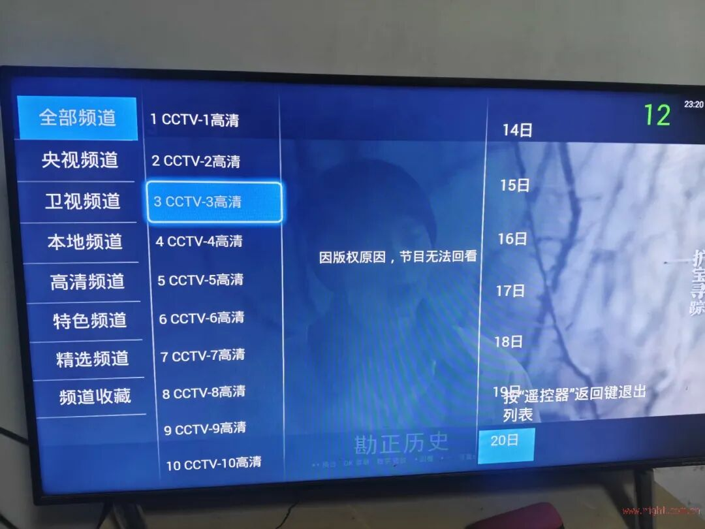
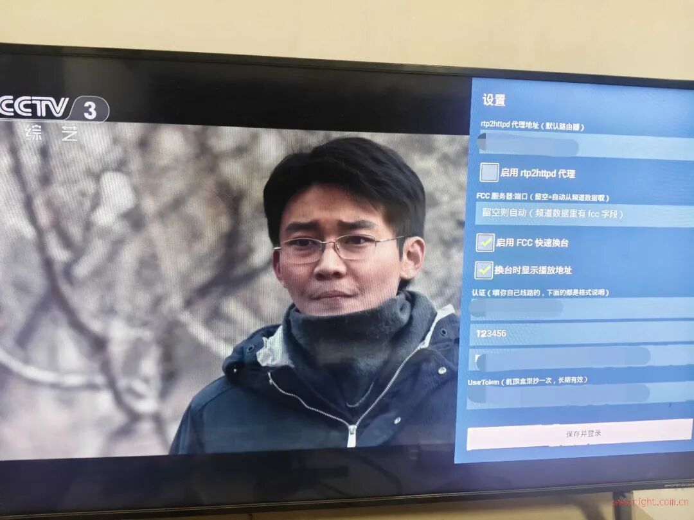

不用机顶盒也能看联通 IPTV？一套基于 rtp2httpd 的 Android TV 方案分享

很多 IPTV 玩家折腾到最后，都会遇到一个问题：
运营商送的机顶盒太封闭，自己又想用电视、投影或者 Android TV 设备直接看运营商 IPTV，到底能不能做到？
最近看到恩山网友分享了一套比较有意思的方案：针对河南联通 IPTV环境，开发了一个 Android TV 客户端，不再依赖运营商原装机顶盒，而是直接在 Android TV 上模拟机顶盒的主要工作流程。
它并不是简单做一个 IPTV 播放器，而是从运营商认证、频道表获取，到直播地址、回看、时移以及快速换台，都尽量按照原来的 IPTV 体系来实现。
本文主要是对网友原帖及项目说明进行整理分享，方便对这类方案感兴趣的朋友了解它的实现思路。
⚠️ 说明：本文为网友方案整理分享，非本人原创开发。
文中涉及的 IPTV 账号、业务密码、STBID、UserToken、组播地址以及网络配置，均应仅用于自己合法开通的 IPTV 业务和自己的设备。不同地区、不同运营商甚至同一运营商不同批次线路，实际配置都可能不同，请勿直接照搬。
原贴地址：
河南联通直播回放用rtp2httpd代理仿机顶盒界面 https://www.right.com.cn/forum/forum.php?mod=viewthread&tid=8490224&fromuid=309178 (出处: 恩山无线论坛)


传统运营商 IPTV，大致可以理解成：
光猫/运营商网络 → IPTV 网络 → 机顶盒 → 运营商门户 → 频道/节目 → 播放
运营商机顶盒并不仅仅是一个播放器。
它还要完成：
IPTV 网络接入 用户认证 STB 身份认证 获取频道列表 获取节目单 获取直播播放地址 获取回看/时移信息 与运营商门户进行交互 最后才是把视频播放出来
网友开发的这个 App，思路就是：
Android TV + IPTV 网络 + rtp2httpd + 运营商门户接口
把原来由运营商机顶盒完成的一部分工作，搬到了 Android TV 上。
所以它和普通的 M3U 播放器并不是一个概念。
普通 IPTV 播放器通常只需要：
给我一个
m3u/m3u8→ 播放
而这个方案需要自己完成：
认证 → 获取频道 → 获取节目 → 获取播放地址 → 播放
这也是整个项目比较有意思的地方。




这一点其实非常重要。
很多人看到“Android TV IPTV 客户端”，第一反应可能是：
下载 APK → 安装 → 输入账号 → 看电视。
实际上并不是这么简单。
因为运营商 IPTV 和普通互联网视频最大的区别之一，就是IPTV 网络和互联网网络通常不是完全一样的。
作者在后续说明中专门补充了这一部分前置配置，而且也是整个方案能够正常工作的基础。
🔌 方案一：电视/机顶盒直接连接光猫 IPTV 网络
作者实际环境中，IPTV 业务存在 MAC 绑定，因此首先需要在光猫上建立 IPTV DHCP VLAN，例如：
IPTV DHCP VLAN 20
然后根据实际环境修改 IPTV 接口的 MAC 地址。
作者给出的做法是通过 Telnet 修改光猫 IPTV 接口 MAC，之后重启光猫，使配置生效。
同时还需要配置 IPTV 相关静态路由，例如：
10.253.0.0
202.99.114.0
222.138.197.0
10.254.0.0这些路由指向：
2_IPTV_R_VID_20另外还需要开启 IGMP Proxy，作者的环境中对应：
高级配置 → 日常应用 → IPTV → 2_IPTV_R_VID_20
并设置公网组播 VLAN 为：
20这样，电视或者机顶盒直接接入光猫 IPTV 网络后，理论上就能够正常获取 IPTV 业务。
不过，如果准备让旁路设备、NAS、N1 或其他 Linux 设备运行 rtp2httpd，那么网络结构还要继续处理。
方案二：使用 OpenWrt/ImmortalWrt 路由器
如果希望让：
电视 → 家庭局域网 → 路由器 → IPTV 网络
这种方式工作，那么路由器就需要正确处理 IPTV 网络以及组播。
作者使用的是 ImmortalWrt。
网络结构大致可以理解为：
光猫 ├── PPPoE → 互联网 │ └── IPTV DHCP → IPTV 内网 ↓ 路由器 IPTV 接口 ↓ IGMP Proxy ↓ LAN ↓ Android TV其中比较关键的一点是：
光猫 IPTV 侧通过 DHCP 获取 IPTV 私网地址，而路由器本身使用 PPPoE 拨号上网。
在 PPPoE 正常工作的基础上，再创建一个 DHCP 接口，让路由器从光猫 IPTV 网络获取内部地址。
然后安装并配置 omcproxy，将这个 IPTV DHCP 接口作为上游接口。
同时建议在：
br-lan上开启：
IGMP Snooping
再把前面提到的 IPTV 私网路由添加到对应的 IPTV 接口。
作者实际环境中还遇到了 DNS 解析问题，因此增加了域名映射，例如：
stb.chinaunicom.com → 10.254.203.241
iptvzu.shangdu.com → 10.254.184.10
iptvzn.shangdu.com → 10.254.188.136
iptvz.shangdu.com → 10.253.76.18这样配置以后，电视就可以通过路由器连接 IPTV。
📌 这里一定要特别提醒：
上面这些 VLAN、IP、路由、域名以及 MAC 配置，都是作者实际线路环境中的参数。
并不意味着所有河南联通用户都一样，更不能直接认为全国联通 IPTV 都能照抄。
如果你自己的 IPTV 网络结构不同，首先应该确认：
光猫 IPTV 是 DHCP 还是 PPPoE 是否存在 VLAN 是否有 MAC 绑定 IPTV 地址段是什么 组播 VLAN 是多少 是否需要 IGMP Proxy 是否需要静态路由 IPTV DNS 是否独立
把这些基础网络问题解决以后，再折腾 App 才有意义。


这也是整个方案非常关键的一环。
运营商 IPTV 直播很多时候使用的是组播 RTP。
例如：
rtp://239.x.x.x:xxxx这种地址在运营商 IPTV 网络内部可以正常使用，但普通 Android TV 播放器并不一定能够直接访问。
而 rtp2httpd 的作用，就是将：
RTP/UDP 组播
转换成：
HTTP 单播
可以简单理解成：
运营商 IPTV 组播 ↓ rtp2httpd ↓HTTP 播放地址 ↓ Android TV例如 App 最终访问的形式类似：
http://192.168.x.x:5140/rtp/239.x.x.x:xxxxAndroid TV 不需要自己处理复杂的 IPTV 组播环境，只需要播放 HTTP 地址即可。
这也是为什么作者的方案并不是“单独安装一个 APK 就结束”，而是需要：
IPTV 网络 + 组播转 HTTP + Android TV App
三者配合。
如果 rtp2httpd 没有正常运行，那么即使 App 已经成功登录、频道表也已经出来了，真正播放的时候仍然可能是黑屏。


网络打通以后，才轮到 App 本身。
这个 App 不是普通播放器，因此第一次使用需要准备四项信息：
其中最麻烦的通常是：
UserToken。
因为它并不是简单通过账号密码就能得到。
作者在分析运营商认证流程时发现：
getencrypttoken.jsp
返回的主要是挑战串，并不会直接给出最终的 UserToken。
而在后续：
auth.jsp
getuserinfo.jsp中，X-Frame-UserToken 也可能为空。
这就出现了一个非常有意思的现象：
账号认证看起来已经成功，但是频道列表却是 0。
因此如果出现：
登录成功，但是没有任何频道
除了检查网络之外，首先就应该检查 UserToken 是否正确。


作者给出了两种方式。
第一种，如果自己的机顶盒允许通过 ADB 访问，可以读取：
/data/local/DeviceInfo.ini里面查找：
UserToken=第二种，则是作者提供的 Windows PowerShell 抓包脚本，通过原机顶盒实际运行过程中产生的数据来获取相关信息。
这里还是要强调：
这些信息应该只从自己的合法 IPTV 设备中获取。
它本质上是为了让自己的 Android TV 客户端能够复现自己原有机顶盒的认证身份，而不是用于获取其他人的账号或者绕过运营商业务权限。


如果直接在电视遥控器上输入几十位甚至上百位字符，确实挺痛苦。
因此项目还提供了：
iptv.cfg配置文件。
格式非常简单：
# 以 # 开头的行是注释
userId=你的14位账号
password=你的密码
stbId=你的32位序列号
userToken=你的32位令牌然后通过 ADB：
adb push iptv.cfg /sdcard/iptv.cfg推送到电视。
App 第一次启动的时候即可导入。
对于 STBID、UserToken 这种很容易把 l、1、I 等字符搞混的长字符串来说，这种方式还是方便很多。


认证成功并不是最终目的。
真正有意思的是后面的 IPTV 门户流程。
作者实际上是在尽量复现运营商机顶盒的工作方式：
启动 App ↓获取挑战串 ↓完成认证 ↓进入运营商门户 ↓获取频道表 ↓获取节目/页面信息 ↓获取直播地址 ↓rtp2httpd 转换 ↓Android TV 播放因此它能够实现的不只是简单直播。
目前主要功能包括：
📡 直播
通过运营商提供的频道信息获取直播地址，再通过 rtp2httpd 播放组播。
⚡ FCC 快速换台
如果线路提供 FCC 服务，可以实现更快的频道切换。
设置里面可以开启：
FCC 快速换台
FCC 服务器留空时可以自动获取。
⏪ 时移
播放过程中可以进入时移。
支持：
左右键 ±30 秒 OK 暂停 返回回到直播 长按右键追赶直播进度
🔄 回看
对于运营商提供回看能力的频道，可以直接从节目列表进入回看。
📺 运营商频道页面
它并不是自己维护一份 M3U。
频道号、频道名称以及节目页面尽可能跟随运营商平台。
所以它更接近：
“把机顶盒搬到 Android TV 上”
而不是：
“再做一个 IPTV 播放器”。


这个项目最值得研究的其实不是 APK 界面，而是作者对运营商 IPTV 门户流程的分析。
例如认证过程中会涉及挑战串以及加密计算。
作者分析出的认证逻辑大致是：
rand = md5(挑战串)然后取前 8 位，对其中的 a-f 做特定映射，最后组成认证数据：
rand$挑战串$UserID$STBID$本机IP$MAC$$CTC再经过：
3DES-ECB + PKCS#5
加密，最终转换为大写十六进制。
也就是说，App 并不是简单地：
POST 用户名
POST 密码而是在模拟运营商机顶盒的认证逻辑。
门户流程也比较有意思：
funcportalauth.jsp ↓frame.jsp ↓frameset_judger.jsp ↓frameset_builder.jsp作者发现一个比较特殊的现象：
频道表只会在一个会话的第一次 frameset_builder 中完整返回。
后面再次刷新可能直接变成 0。
这也解释了为什么 App 不能简单地：
每次频道刷新 → 再请求一次页面
而是需要在必要的时候重新完成整套认证流程。


运营商 IPTV 频道并不是永远不变的。
可能出现：
新增频道 下架频道 频道改号 频道改名
如果 App 固定保存一份频道列表，时间久了肯定会出现问题。
所以作者做了一个自动维护机制。
App 启动后大约 9 秒，会自动进行一次完整认证并刷新频道表。
日志可能出现：
频道表刷新开始（启动自检）如果没有变化：
结构无变化，共131个...如果有变化，则会记录：
新增2
下架1
改号0
改名3这样就不需要每次频道调整以后重新安装 APK。
更细节的一点是：
它保存的不是“上次播放第几个频道”，而是频道身份。
例如：
上次看：湖南卫视即使运营商调整了频道顺序，只要湖南卫视仍然存在，它依然可以找到对应频道。
如果原频道已经下架，则自动从第一个频道开始。
另外，作者还处理了一个电视端很容易出现的问题：
频道页面的光标和实际播放频道错位。
也就是说，界面高亮的是 A，真正播放的却是 B。
项目通过页面游标重新校准，避免这种情况。


这个 App 明显是按照 Android TV 场景设计的，而不是手机 App。
📺 直播状态
↑ / ↓：上下换台 数字键：输入频道号 输入 2 秒后自动跳转 OK：打开频道栏 ← / →：进入时移 音量键：调节音量 Menu：打开设置 连续按两次返回：退出 App
📋 频道栏
↑ / ↓：上下移动频道 ←：切换分类 →：节目列表 OK：播放/进入回看 返回：关闭频道栏
⏪ 时移/回看
← / →：±30 秒 OK：暂停 返回：回到直播 长按右键：快速追赶直播
另外还定义了四色按键：
红色：直播
绿色：回看
黄色：首页
蓝色：我的如果电视遥控器支持四色按键，操作起来会比较接近传统机顶盒。


App 设置比较简单，主要包括：
🌐 rtp2httpd 地址
默认代理端口：
5140例如：
http://路由器IP:5140如果 rtp2httpd 就运行在路由器上，那么填写路由器局域网地址即可。
⚡ FCC
可以开启/关闭快速换台。
FCC 服务器可以留空，让程序自动获取。
🔗 播放地址显示
可以打开：
显示播放 URL
方便折腾 IPTV 的朋友调试。
🔐 认证信息
就是前面提到的：
UserID
Password
STBID
UserToken修改以后立即生效，并且会保存。


作者的 UI 设计基准是：
1280 × 720然后根据实际屏幕进行缩放。
例如：
1280 × 720 → 1.0
1920 × 1080 → 1.5
2560 × 1440 → 2.0
3840 × 2160 → 3.0这种方式并不依赖 Android 系统 DPI 设置。
对于电视盒子、电视、投影等不同 Android TV 设备来说，确实比单纯写死一个尺寸更加可靠。


这个项目的故障基本可以按照“网络 → 认证 → 频道 → 播放”的顺序排查。
❌ 黑屏
首先检查：
IPTV 组播是否正常 ↓IGMP Proxy 是否正常 ↓rtp2httpd 是否运行 ↓5140 端口是否可以访问如果频道列表正常，但所有频道都黑屏，那么优先检查 rtp2httpd 和组播链路。
❌ 登录成功，但没有频道
重点检查：
UserToken。
这是作者特别强调的一点。
认证看起来成功，并不代表频道表一定能够正常获取。
❌ 提示“暂无此频道”
这种情况不一定是 App 的问题。
运营商页面可能存在某个频道，但你自己的 IPTV 线路并没有实际提供对应播放地址。
❌ 没有 EPG
项目并不是自己建立一套完整 EPG 数据库。
如果运营商本身没有给某个频道提供 EPG，那么 App 也不会凭空生成。
❌ 回看不可用
可能是运营商后台节目数据存在延迟。
这种情况下可以尝试返回上一个已经生成回看数据的节目。
❌ 换台比较慢
确认 FCC 是否开启。
同时检查线路本身是否提供 FCC 服务。
❌ 播放过程中突然退回桌面
部分电视自带播放器会抢前台焦点。
项目对此进行了处理，会尝试重新把 App 拉回前台。
❌ 怎么退出？
连续按两次返回键。


作者在实际测试中发现了一个很典型的情况。
例如页面上可能存在：
606 湖南卫视4K但是从真正的权威频道表来看，并没有这个频道的播放地址。
进一步请求：
channel_play.jsp?mixno=606拿到的可能只是一个中间件控制页面，而不是实际的视频播放地址。
这意味着：
运营商页面“显示了这个频道” ≠ 你的 IPTV 线路“真的提供这个频道”。
所以如果遇到某个频道：
页面有，但是播放不了
不要第一时间认为 App 有 Bug。
原装机顶盒如果在同一条线路上也无法播放，那么很可能就是运营商线路本身没有给这个频道提供播放地址。


作者也提供了日志查看方式：
adb connect <电视IP>:5555然后：
adb logcat -s IPTVWEB:I里面可以看到类似：
频道表刷新开始（启动自检）或者：
结构无变化，共131个...也可能看到：
新增2/下架1/改号0/改名3换台时则可以看到：
PROBE 换台页 mixno=...
地址特征: 无以及最终的播放 URL 等信息。
对于排查：
到底是认证失败、频道没有地址，还是 rtp2httpd 播放失败
非常有帮助。

如果单纯从“能不能看电视”来说，这个项目其实并没有什么神奇之处。
因为现在 Android TV 上能播放 IPTV 的软件非常多。
真正值得研究的是它的思路：
它不是自己维护一套直播源，而是在尽量复现运营商原有的 IPTV 机顶盒工作流程。
整个方案可以概括成：
合法开通的 IPTV 业务 ↓ IPTV 网络打通 ↓ IGMP/组播 ↓ rtp2httpd ↓ Android TV App ↓ 运营商认证 ↓ 获取频道表 ↓ 获取播放地址 ↓直播 / FCC / 时移 / 回看这样做的一个好处就是：
运营商频道发生变化时，不需要自己重新找 M3U、改频道号、换播放地址。
只要运营商的接口和业务流程没有发生重大变化，App 就可以重新认证并自动同步频道表。
对于 IPTV 玩家来说，这种思路其实比单纯收集一堆直播源更值得研究。
它也让我们重新认识了 IPTV：
IPTV 并不只是“一堆组播地址”。
在真正的运营商 IPTV 系统里，背后还包括：
网络接入、组播、认证、门户、中间件、频道表、节目单、回看、时移、FCC 以及终端设备。
而这个项目做的事情，就是把其中原本藏在运营商机顶盒里的部分流程，一点一点搬到了 Android TV 上。


本文仅作为 IPTV 技术研究、网络配置和项目分享。
不同地区运营商的 IPTV 网络、VLAN、认证方式、接口地址和业务权限差异很大，河南联通的配置并不代表其他地区也能使用。
尤其是账号、密码、STBID、UserToken 等信息，都属于用户自己的业务数据，请务必仅用于自己合法开通的 IPTV 服务。
如果你的目标只是让家里的电视观看自己已经开通的运营商 IPTV，那么这种“保留运营商业务体系 + 自己解决终端和网络问题”的思路，确实值得 IPTV 玩家研究一下。
📡 对 IPTV 玩家来说，真正有意思的往往不是“找一个能播放的源”，而是搞明白：
这个源到底从哪里来、网络怎么走、机顶盒到底做了什么，以及我们能不能用自己的设备把整个链路重新跑起来。